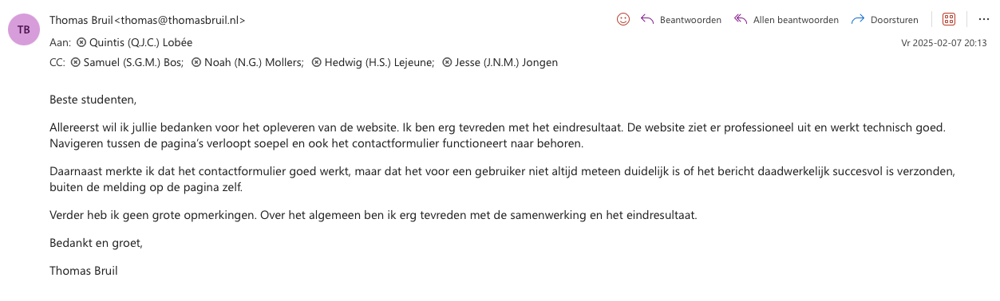

In dit werkproces heb ik de website geëvalueerd en gekeken naar mogelijke verbeterpunten. Door de website opnieuw te analyseren heb ik verschillende verbetervoorstellen opgesteld om de gebruikerservaring te verbeteren.
De analyse van de website is uitgevoerd op basis van meerdere informatiebronnen. Hierbij is gebruik gemaakt van:
Uit de testresultaten blijkt dat de technische functionaliteiten van de website correct werken. Zo
functioneren de navigatie (TC1 t/m TC5) en het contactformulier (TC6 t/m TC14) zoals verwacht.
Tijdens het analyseren van de testresultaten en het gebruik van de website is echter gebleken dat er nog
verbeteringen mogelijk zijn op het gebied van gebruiksvriendelijkheid en gebruikersbegeleiding.

Op basis hiervan zijn verschillende verbetervoorstellen opgesteld.
Uit testcases TC1 t/m TC5 blijkt dat de navigatie correct functioneert, maar dat gebruikers na het bekijken van de homepage geen duidelijke vervolgstap krijgen.
Verbetervoorstel:
Voeg onder de vier klanttypes een duidelijke knop toe met de tekst:
“Plan een kennismakingsgesprek”. Deze knop verwijst naar de contactpagina.
Resultaat: De gebruiker wordt actief gestuurd naar het opnemen van contact, wat de conversie verhoogt.
Uit de analyse van de testresultaten blijkt dat de stappen die een gebruiker doorloopt niet duidelijk genoeg op elkaar aansluiten.
Verbetervoorstel:
De structuur van de website aanpassen naar:
Resultaat: De gebruiker wordt stap voor stap begeleid naar het opnemen van contact.
Uit testcases TC7 t/m TC10 blijkt dat validatie correct werkt, maar pas na het klikken op verzenden.
Verbetervoorstel:
Voeg realtime validatie toe zodat fouten direct zichtbaar zijn tijdens het invoeren.
Resultaat: De gebruiker krijgt direct feedback en maakt minder fouten.
Uit testcase TC12 blijkt dat de gebruiker meerdere keren kan klikken op het verzendknop, wat leidt tot dubbele submits.
Verbetervoorstel:
Voeg een functie toe om de verzendknop uit te schakelen na de eerste klik.
Resultaat: De gebruiker kan maar één keer klikken op het verzendknop.
Uit testcase TC6 blijkt dat het formulier correct wordt verzonden, maar de gebruiker geen externe bevestiging ontvangt.
Verbetervoorstel:
Verstuur automatisch een bevestigingsmail na het verzenden van het formulier.
Resultaat: De gebruiker heeft zekerheid dat het bericht succesvol is verzonden.
Onderstaande planning toont de werkzaamheden die nodig zijn om de verbeteringen te realiseren. Elke taak is gekoppeld aan een specifiek verbetervoorstel.
| Taak | Duur |
|---|---|
| Analyse van testresultaten en verbeterpunten | 1 dag |
| Ontwerpen Call-to-action knop (Verbetering 1) | 0.5 dag |
| Implementeren Call-to-action op homepage (Verbetering 1) | 1 dag |
| Ontwerpen verbeterde customer journey (Verbetering 2) | 2 dagen |
| Implementeren nieuwe navigatiestructuur (Verbetering 2) | 2 dagen |
| Implementeren realtime validatie (Verbetering 3) | 1 dag |
| Implementeren dubbele submits voorkomen (Verbetering 4) | 1 dag |
| Implementeren bevestigingsmail (Verbetering 5) | 1 dag |
| Testen van alle verbeteringen | 1 dag |
| Bugfixes en optimalisaties | 2 dagen |
| Oplevering van de verbeterde website | 1 dag |